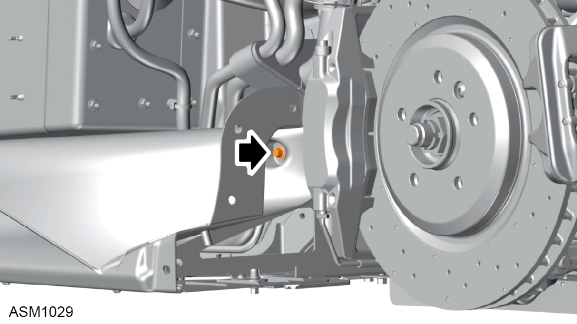
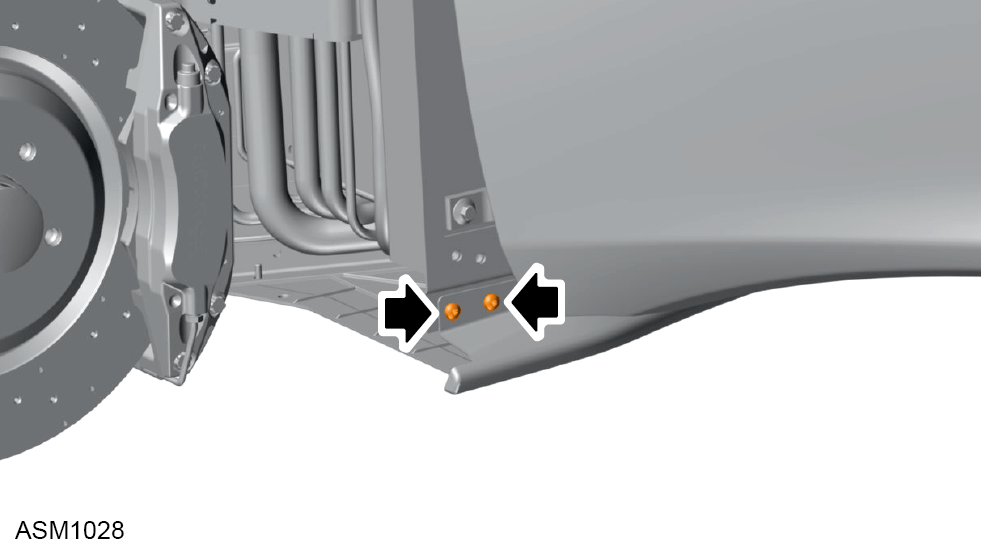
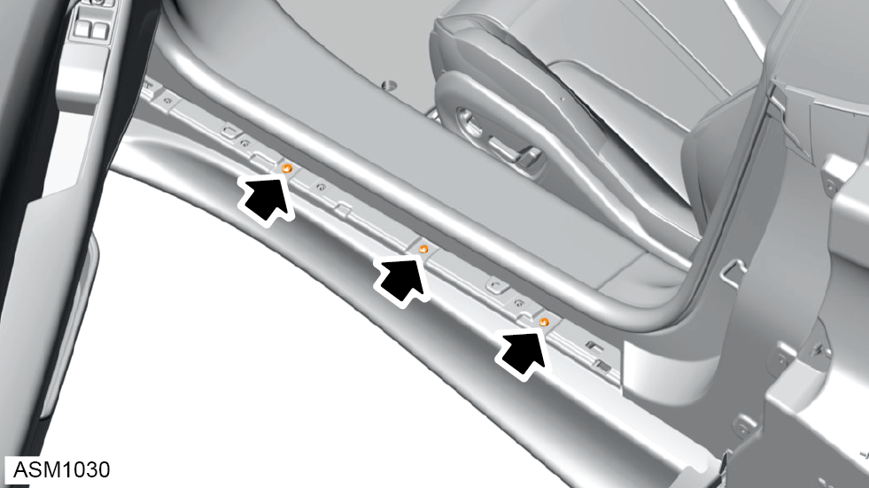
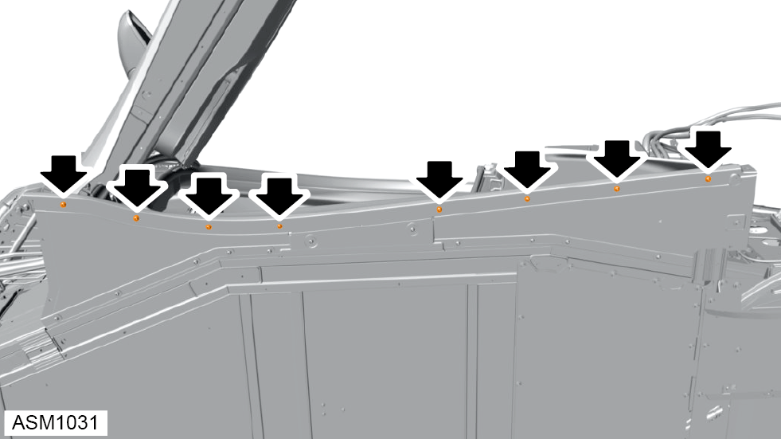
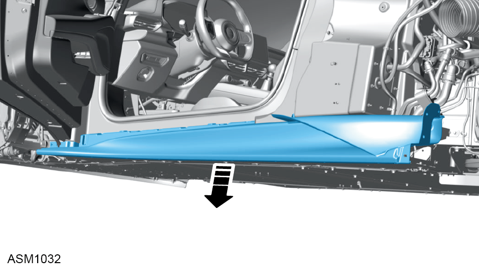
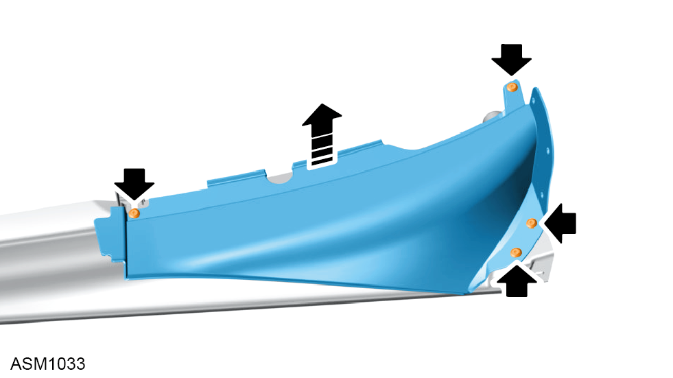

Door Sill Outer Panel - Left Side
Print
Operation Code: 10.02.13-02
Removal
- Remove sill finisher left side. Refer to procedure.
- Remove rear fender left side. Refer to procedure.
- Remove front fender left side. Refer to procedure.

- Remove M6x20 bolt securing rear of sill outer panel to door sill bracket. Torque 10 Nm.

- Remove M6x16 bolts (x2) securing front of sill outer panel to bodyside panel. Torque 10 Nm.

- Remove M6x16 bolts (x3) securing top of sill outer panel to vehicle. Torque 10 Nm.

- Remove M5x18 bolts (x8) securing bottom of sill outer panel to inner door sill panel. Torque 6 Nm.

- Using assistance remove sill outer panel with lower air duct.
Do not carry out further disassembly if removing for access only.

- Remove scrivets (x4) securing lower air duct to sill outer panel.
- Remove lower air duct from sill outer panel.
Installation
- Installation is the reverse of removal procedure except for the following:
- Check gap and flush tolerances - see Alignment Specifications for Body Panels and Closures section.